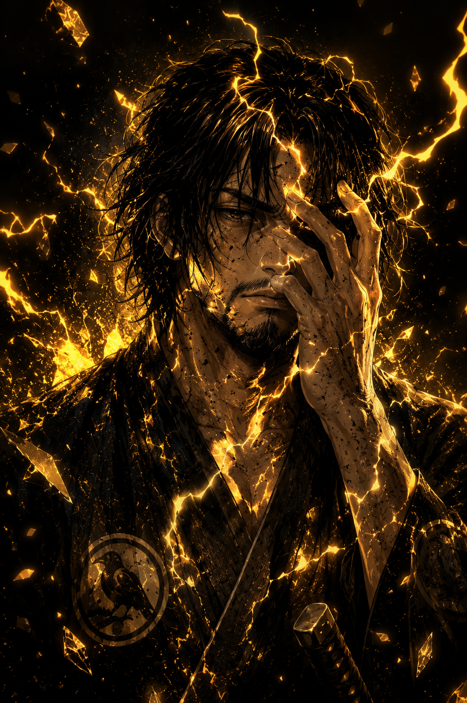
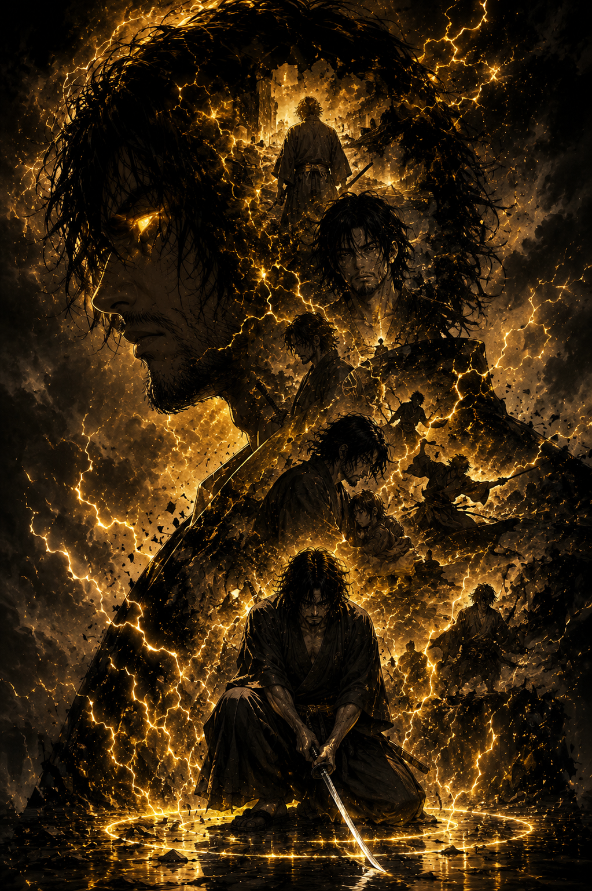

“O homem que sobrevive à guerra nunca retorna sendo o mesmo.”
O Guerreiro Que Carrega o Peso da Família
Takeshi Kurosawa cresceu aprendendo que sobreviver era mais importante do que sonhar. Filho de Seijuro Kurosawa e irmão mais velho de Rin, ele carregou desde cedo o peso de proteger sua família em um vilarejo consumido pelos impostos cruéis de Daikan Onizuka.
Diferente de Rin, Takeshi escolheu enfrentar o mundo pela força. Tornou-se soldado ainda jovem, acreditando que suportar a servidão era o único caminho para manter sua família viva.
Contudo, sua honra e experiência rapidamente despertaram a inveja de Goratsu Onizuka, que via nele uma ameaça à própria autoridade.
Acusado injustamente de traição e desvio de recursos militares, Takeshi foi condenado publicamente à execução. Mesmo humilhado e espancado diante do povo, recusou-se a abaixar a cabeça.
Sua dignidade silenciosa marcou profundamente Rin e chamou a atenção de Katsuro, capitão do Clã Hayashi.
Graças a uma perigosa negociação política conduzida por Katsuro, sua sentença foi comutada para exílio. Expulso das terras de Daikan, Takeshi passou a viver sob proteção do Clã Hayashi, onde lentamente começou a reconstruir sua vida como guarda e soldado.
Apesar da nova chance, o passado nunca deixou de persegui-lo. A morte do pai, o sofrimento de Rin e a corrupção dos Onizuka alimentam dentro dele uma culpa constante.
Takeshi acredita que falhou como filho e como irmão por não ter conseguido impedir a destruição da própria família.
Ainda assim, por trás da postura rígida e da aparência cansada pela guerra, existe um homem profundamente leal, disposto a sacrificar tudo pelas poucas pessoas que ama.
Takeshi não luta por glória. Não luta por títulos. Luta porque alguns homens simplesmente não conseguem abandonar aqueles que juraram proteger.
“Alguns homens carregam espadas. Outros carregam promessas.”